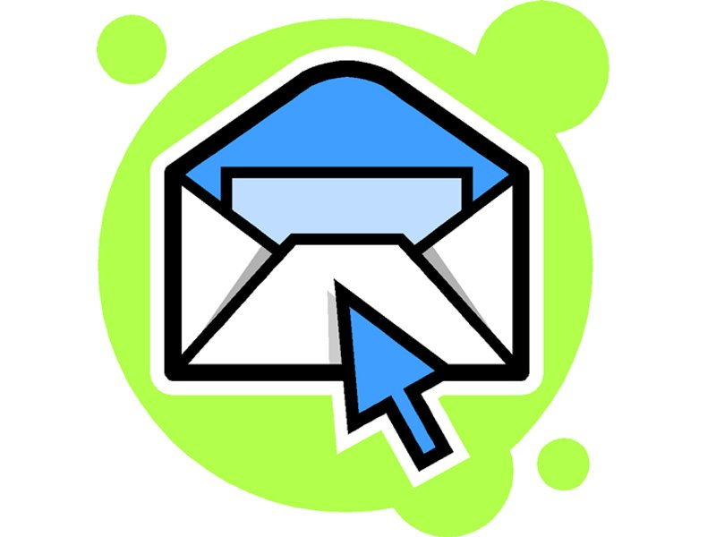
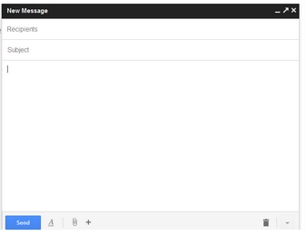

1. Introducción
En la práctica de hoy vamos a practicar todos los conceptos que hemos estado viendo en días anteriores.
2. Acceder al correo electrónico

Para acceder al correo electrónico, recuerda que puedes hacerlo de varias maneras desde un navegador:
- Pulsando en el favorito del navegador "Gmail UJI" que encontrarás en la parte superior izquierda de la ventana de navegación.
- Accediendo a la web de http://mayores.uji.es y pulsando en el icono de GMail de la UJI
- Accediendo directamente a la dirección: http://gmail.uji.es
3. Comprobar el nuevo correo
Dedica unos minutos a revisar el correo nuevo que has revisado estos días. ¿Sabrías localizar los correos de la práctica del lunes? Utiliza las flechas de navegación para pasar de página y ver correos más antiguos.
4. Gestionar el correo
Vamos ahora a eliminar aquellos correos que no nos valgan para nada, archivar aquellos correos intersantes pero que no nos interesen que estén en la bandeja de entrada.
5. Recibir nuevo correo
Os voy a mandar un par de correos. ¿Sabrías cómo decirle al navegador que compruebe si ha llegado algún mensaje nuevo?
6. Solicitar dirección extendida
Vamos ahora a pedir que nos creen una dirección de correo más sencilla de recordar. Para ello, sigue los pasos indicados en la siguiente página web:
7. Buscar información por el correo
- Busca correos que contengan las palabras "Pili Escuder"
- Busca correos que contengan la palabra "Fotografía".
8. Componer un mensaje con una fotografía
Veamos cómo podemos enviar un correo con un adjunto, en este caso una fotografía.
- Pulsa sobre el botón de Redactar correo.
- Crea un nuevo correo dirigido a mi, indicando que me envías una foto.
- Pulsando sobre el botón de adjuntar fotografía, busca una foto de la carpeta imágenes y envíamela.
9. Enviarme una foto buscada en Google
Si has conseguido realizar los puntos anteriores, ¿sabrías buscar en Google una imagen de la pirámide de Giza, descargarla en la carpeta imágenes, y posteriormente enviármela por correo?